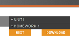
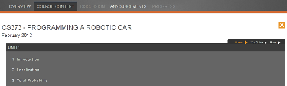

A Google Chrome extension to download Udacity.com videos for offline watching.
Download
Install udacity-dl Chrome extension
You can download the source in either
zip or
tar
formats, or clone the project
with Git by running:
$ git clone git://github.com/nzmsv/udacity-dl
Usage
- Once installed, go to any Udacity course content page (the extension will activate on pages matching http://*.udacity.com/view*).
- A new button labelled Download button should appear next to the video list.

- Clicking it brings up a full list of videos for the
course. This can be dismissed by clicking the close button in
the upper right corner. 
- Three output formats are available:
TODO
- Make video format user-selectable
- Clean up the general mess
- ...
License
CC0 Public Domain
Authors
Greg Inozemtsev (greg@nzmsv.com)